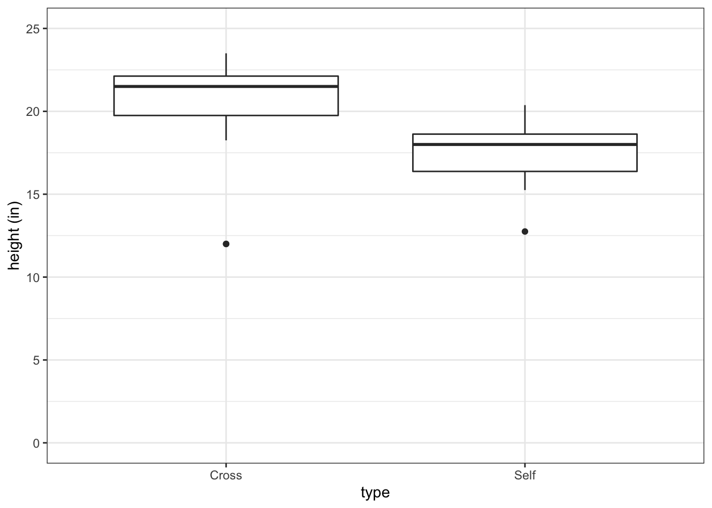

3 Description
3.1 Introduction
- Author starts the chapter by introducing linear-model analysis in which the goal is to compare the effects of different treatments
- Each treatment is applied to a group of experimental units (biological replicates)
- If the treatments produce a change in the replicates, then there will be a quantifiable difference between groups
- This chapter focuses on treatment effects and hypohthesis testing is saved for later
3.2 Darwin’s maize pollination data
- Darwin’s book The Effects of Cross and Self-Fertilization in the Vegetable Kingdom (1876) describes he produced maize seeds by pollinating the flowers of the parent from the same individual or with pollen from another plant
- Pairs of seeds taken from selfed or out-crossed plants were then grown in pots
- The height of the young seedlings was recorded as a measure for fitness
- Darwin wanted to know whether inbreeding reduced fitness of the selfed plants
- Darwin’s data is in the package ‘SMPracticals’
- The dataframe that contains the data is ‘darwin’
- R terminology
- single values = scalars
- columns of numerical data = vectors
head(darwin)
#> pot pair type height
#> 1 I 1 Cross 23.500
#> 2 I 1 Self 17.375
#> 3 I 2 Cross 12.000
#> 4 I 2 Self 20.375
#> 5 I 3 Cross 21.000
#> 6 I 3 Self 20.0003.2.1 Known your data
Understand structure of the dataframe:
str(darwin)
#> 'data.frame': 30 obs. of 4 variables:
#> $ pot : Factor w/ 4 levels "I","II","III",..: 1 1 1 1 1 1 2 2 2 2 ...
#> $ pair : Factor w/ 15 levels "1","2","3","4",..: 1 1 2 2 3 3 4 4 5 5 ...
#> $ type : Factor w/ 2 levels "Cross","Self": 1 2 1 2 1 2 1 2 1 2 ...
#> $ height: num 23.5 17.4 12 20.4 21 ...- Structure:
- The first three variables are Factors
- These are categorical varaibles that divide data into discrete groups called levels
- The last variable is a numerical one. It is a continuous measure of heigth
- The first three variables are Factors
Generate summary statistics for the dataframe:
summary(darwin)
#> pot pair type height
#> I : 6 1 : 2 Cross:15 Min. :12.00
#> II : 6 2 : 2 Self :15 1st Qu.:17.53
#> III:10 3 : 2 Median :18.88
#> IV : 8 4 : 2 Mean :18.88
#> 5 : 2 3rd Qu.:21.38
#> 6 : 2 Max. :23.50
#> (Other):183.2.2 Summarizing and describing data
- Plant height is the response variable
- The treatments involved are two types of hand-pollination (selfing and crossing). This is the explanatory variable
- The goal is to see if we can explain the differences in plant height as a function of pollination treatment
- There are 15 replicates in each treatment group, planted in pairs
- This dataframe is in the long or tidy format, which is typically ideal
- Darwin data in the wide format can be found in the package, Sleuth3, and specifcally in the dataframe, exo0428
head(ex0428)
#> Cross Self
#> 1 23.50 17.38
#> 2 12.00 20.38
#> 3 21.00 20.00
#> 4 22.00 20.00
#> 5 19.13 18.38
#> 6 21.50 18.63Visualize the data in a boxplot:
fig3_1 <- ggplot(darwin, aes(x=type, y=height)) + geom_boxplot() +
ylab("height (in)") + theme_bw() + scale_y_continuous(limits = c(0,25), breaks=c(0,5,10,15,20,25))
fig3_1
- Figure takeaways:
- Bold central horizontal line is the median
- Top horizontal part of box is the third quartile
- Bottom horizontal part of the box is the first quartile
- These contain the middle of the data
- The whiskers contain 95% of the data
- The datapoints are outliers
Violin plot can show the higher and lower ‘centers of gravity’ of the distributions of the data:
fig3_2 <- ggplot(darwin, aes(x=type, y=height)) +
geom_violin() +
ylab("height (in)") + theme_bw() + scale_y_continuous(limits = c(0,25), breaks=c(0,5,10,15,20,25)) + geom_jitter()
fig3_2
- The author sums up the goal of the analysis by quoting a statistician, Nate Silver, who says that the aim is to find if there is any systematic pattern (signal) in the data that stands out above the background variability (noise)
- Signal is often quantified through finding the average (also median and mode)
Determine the mean for all data (ignoring treatment groups):
- Now the problem is how to quantify variability.
- Variance is quantified through a process called ‘least squares’, more on this later
- Variance is also known as mean squares and is referred to as
- \(S^{2}\) when a sample of data is being discussed (as here) and
- \(\sigma\)\(^{2}\) (sigma) when the population from which the sample is drawn is being discussed
Calculate the variance in the data as a whole:
var(darwin$height)
#> [1] 10.11846- The catch about this estimate of variability is not on the same scale as our data
- This is on a squared scale, where as the data at hand is unsquared
- This means that the measure of signal (plant height) is in inches and the varibility of the plant height is in squared inches, which doesn’t make sense
- So you have to take the square root of variance to get back to the same scale as the original data
- Effectively, this means that you have to find the standard devation (SD):
\(SD = \sqrt{s^2}\)
- Effectively, this means that you have to find the standard devation (SD):
- Again, \(\sigma\) is used when referring to the whole population standard deviation
- The latin \(s\) is used for the sample SD
- SD is the average difference between an individual measurement (i.e. a single plant height measurement) and the mean value
Calculate the SD in R:
a <- sd(darwin$height)
a
#> [1] 3.180953Double check derivation of SD:
3.2.3 Comparing groups
Calculate means of groups (this approach does not scale well):
Calculate summary statistics more efficiently:
with(data = darwin, tapply(height, type, mean))
#> Cross Self
#> 20.19167 17.57500
with(data = darwin, tapply(height, type, sd))
#> Cross Self
#> 3.616945 2.051676Assign calculated values to objects:
Create a new column to contain text to soon merge into the dataframe:
pollination <- c("Crossed","Selfed")
dar_sum_stats <- data.frame(pollination, means, sds)
dar_sum_stats
#> pollination means sds
#> Cross Crossed 20.19167 3.616945
#> Self Selfed 17.57500 2.051676Plot these summary statistics:
fig3_3 <- ggplot(dar_sum_stats, aes(x=pollination, y=means)) +
geom_pointrange(aes(ymin = means - sds, max = means + sds)) +
ylab("height (in)") + theme_bw()
fig3_3